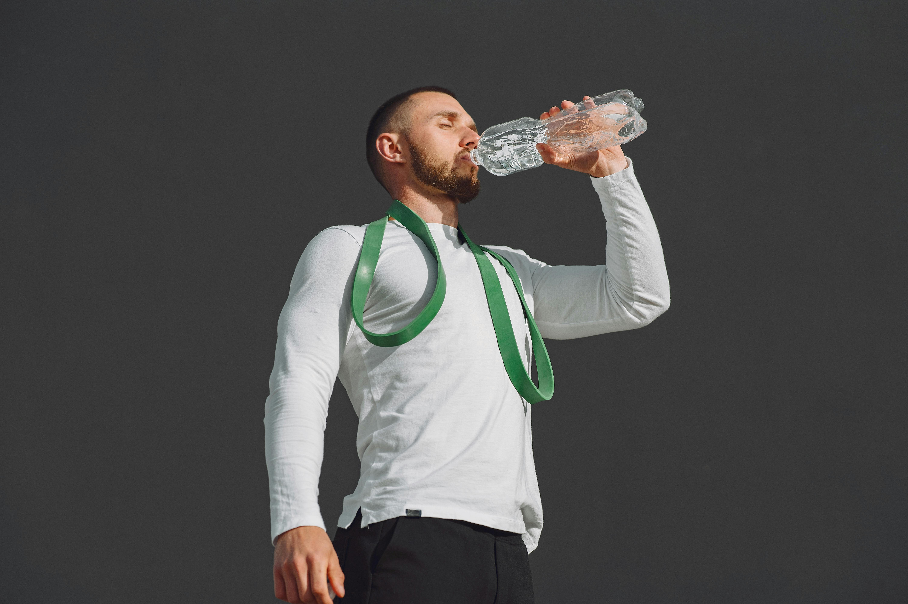

What is Dehydration?
Published: [11/05/2025]
Dehydration occurs when your body loses more fluids than it takes in, leading to insufficient water to carry out normal bodily functions. All ages can be affected, but young children, the elderly, those who are physically active, and those who are exposed to heat are particularly susceptible. It can range in severity from mild to severe.
Causes of Dehydration
- Insufficient water intake
- Excessive sweating (e.g., from exercise or heat)
- Excessive urination (e.g., from diabetes or diuretics)
- Diarrhea or vomiting
- Fever
Symptoms
Mild Dehydration:
- Thirst
- Dry mouth and dry skin
- Fatigue
- Dark yellow urine
- Decreased urine output
- Headache
- Dizziness or lightheadedness
Severe Dehydration:
- Extreme thirst
- Very dry mouth and skin
- Rapid heartbeat
- Low blood pressure
- Sunken eyes
- Confusion or irritability
- Fainting
- Little or no urination
Prevention
- Drink water regularly
- Rehydrate immediately after a physical activity
- Eat water-rich foods (like fruits and vegetables)
- Monitor urine color (light yellow is ideal)
Treatment
- Mild cases: Increase fluid intake (water, oral rehydration solutions)
- Moderate to severe cases: May require medical attention, IV fluids
Conclusion
Dehydration is more than just feeling thirsty—it can significantly impact your health and well-being if not addressed promptly. Staying properly hydrated helps your body function efficiently, supports energy levels, and prevents complications such as heatstroke and kidney issues.
Make hydration a daily priority by drinking enough water, especially during hot weather, physical activity, or illness. By being mindful of the signs and taking proactive steps, you can keep dehydration at bay and support your overall health. Don't wait for extreme symptoms before you listen. Stay hydrated, stay healthy!